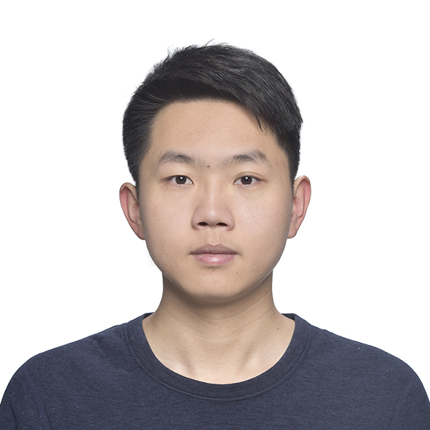

博士 · 清华大学集成电路学院
集成电路科学与工程博士研究生，预计 2028.06 毕业。导师胡杨老师，尹首一教授课题组。

Tsinghua University · School of Integrated Circuits
清华大学集成电路学院直博生，师从胡杨副教授（博士生导师、高层次青年人才、科技创新 2030“新一代人工智能”重大项目负责人）与尹首一教授（清华大学集成电路学院院长、IEEE Fellow、国家杰出青年科学基金获得者），研究聚焦面向大模型的国产算力基础设施。
集成电路科学与工程博士研究生，预计 2028.06 毕业。导师胡杨老师，尹首一教授课题组。
集成电路与集成系统设计本科，加权成绩 93.73/100，专业排名 1/78。
面向昇腾处理器开展推理引擎和核心算子优化，关注 Attention、GEMM、异构硬件适配与端到端吞吐。
研究共享内存抽象、地址翻译、通信映射与负载均衡，让晶圆级芯片更高效地承载大模型负载。
参与下一代 AI 芯片架构建模、行为级仿真、设计空间探索和编译映射工具链建设。
探索大模型在电路设计自动化和 EDA 流程中的应用，将产业实践转化为课程实验与教学实践。
研究实习生，参与自研 XY-Serve 大模型推理引擎优化与昇腾算子开发。
研究实习生，参与基于大语言模型的模拟电路自动化设计框架开发。
主要参与人，围绕晶圆级 AI 芯片架构、大模型部署、通信优化和负载均衡开展研究。
项目参与人，参与下一代 AI 芯片架构建模、仿真评估、设计空间探索与软硬件协同设计。
参与华为终端 BG 小艺架构设计部昇腾原生大模型推理系统开发，提出 Tiled 编程模型、任务分解与重排机制，并设计 Meta-Attention、SmoothGEMM 等优化模块。相关技术落地 XY-Serve 推理系统，上线小艺语音智能助手，端到端吞吐量提升 95%。
参与国家科技重大专项《晶圆级 AI 芯片架构研究》，围绕共享内存、地址翻译、MoE 通信映射和负载均衡开展工作。相关研究产出 HPCA 论文与在投 ASPLOS 论文，方案使晶圆级芯片性能提升约 62%，相比 NVL72 超级节点方案提升 39%。
参与小米芯片合作项目，围绕可扩展架构建模、仿真评估、设计空间探索和编译映射方法开展研究，支撑行为级仿真器、映射器和设计空间探索工具建设。
面向模拟电路设计中的人工经验依赖、模块复用不足和参数迭代繁琐等问题，参与 AI EDA 自动化框架研发，将模拟单元抽象为 Python 类，并结合结构感知提示、仿真验证闭环与检查点机制，实现从需求描述到网表生成的自动化流程；同时参与校内首门《人工智能辅助数字电路设计》课程建设。
Tang Xinru, Hou Jingxiang, Jiang Dingcheng, Wei Taiquan, Liu Jiaxin, Deng Jinyi, Wang Huizheng, Yang Qize, Shang Haoran, Li Chao, Hu Yang, Yin Shouyi.
2026 IEEE International Symposium on High Performance Computer Architecture (HPCA), 2026. 第一作者。
Mingcong Song, Xinru Tang, Fengfan Hou, Jing Li, Wei Wei, Yipeng Ma, Runqiu Xiao, Hongjie Si, Dingcheng Jiang, Shouyi Yin, Yang Hu, Guoping Long.
ASPLOS (1) 2026: 314-329. DOI: 10.1145/3760250.3762228. 共同第一作者。
Tang Xinru, et al.
Submitted to ASPLOS, 2026. 第一作者，在投。
担任硕士毕业答辩秘书，协助 19 名同学完成答辩流程；参与清华大学开放日，面向家长和学生介绍集成电路学院；赴成都、合肥、北京等地调研多家集成电路企业，持续理解国产芯片产业链现状与人才需求。
在研究生创新实验班班会上分享学习、科研、实习及求职经验，围绕科研选题、论文写作、投稿策略、实习价值挖掘和就业方向选择提供经验建议。
Contact